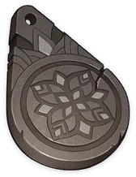
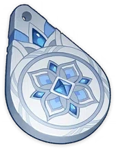
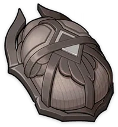

Copper Talisman of the Forest Dew
Weapon Ascension Material.
Under the instructions of the First Sage, the ancestors of
the forest people made these talismans using withered trees
to commemorate the Lord of Verdure.
The talisman's shape was inspired by the forest dew. It
symbolizes the permeation of wisdom into mortal minds.
Iron Talisman of the Forest Dew


Weapon Ascension Material.
Later, the Lord of Verdure taught people the mystery of the
forging of black iron. The innocent mortals thus grasped
the knowledge of using fire to forge blades.
The Lord of Verdure took pleasure in their knowledge —
Lethal as fire and blades were to her, they made ordinary
people powerful.
Silver Talisman of the Forest Dew


Weapon Ascension Material.
In the myriad lore of the forest, the one in the striped
cape that resembled blazing flames was the Greater Lord of
the Labyrinths and the Owner of the Moon-Mirrored Spring.
When he bowed his head and struck up a friendship with the
Lord of Verdure, the tokens of their friendship were the
gems that glimmered like water and silver that gleamed like
the moonlight.
To repay such a gesture, the Lord of Verdure promised to
keep secrets for the Greater Lord of the Labyrinths and
safeguard the intricate and beautiful dreams of the
rainforest.
No one could have foretold that the magnificent mansion of
secrets and dreams would later fade away amidst the shroud
of the dark flame of oblivion, after which its ash returned
to the soil and became nutrients for the virgin
rainforests.
Golden Talisman of the Forest Dew
Weapon Ascension Material.
"Mortals hold dear three things only: the spring water that
embraces the moonlight, verdant life, and ageless youth..."
The nature of "wisdom" is not domination over all minds or
scheming to gain all the benefit. Instead, it is about
empowering even ordinary beings to one day overcome their
imposed constraints.
Though the roar of the tiger is no longer heard in the
forest and the resilient guardians would seclude themselves
within the dreams of children... On the night when every
secret golden seal is lifted and all dreams glow like amber
in the moonlight, perhaps she and her beloved people will
eventually win genuine freedom.
Oasis Garden's Reminiscence
Weapon Ascension Material.
People used to say that the Lord of Flowers was the Lord of
Joy and Happiness. Freshwater sprang from her sleeves, and
thus was the oasis of blossoming flowers born in the
desert. Flowers and grasses followed in her footsteps, and
gleaming moonlight cleared the way for her.
In the bitter days when the sky turned its back on the
ground, the Lord of Flowers extended her mercy to each and
every one of the mortals, letting them regain their
happiness and egos, allowing leisure and luxury to resume.
Oasis Garden's Kindness
Weapon Ascension Material.
In the literature buried deep beneath the yellow sands, the
Lord of Flowers was the Mistress of Dreams.
She bestowed dreams upon the exiled, the manic, and the
foolish. In those dreams, they were presented with their
dearest delights. Burdened by the brutality of reality,
they were fascinated by the charm of the Lord of Flowers
and captivated by her beauty and care.
Oasis Garden's Mourning
Weapon Ascension Material.
The Lord of Flowers was in an amicable relationship with
the Jinn.
The Mistress of Flowers and Oases joined hands with the
Lord of Deserts and built Ay-Khanoum, the "City of
Amphitheaters," which carried the meaning of "City of the
Moon Maiden" in the ancient language of the Jinn.
Later, however, it was said that the Lord of Flowers died
due to the malice of the burning sun and yellow sand, after
which the blossoms of purple Padisarahs were never seen
again in the oases.
After the departure of the Lord of Flowers, the sandstorms
keened, the Jinn sobbed, and the moonlight-silver gem disc
lost its original, glad purpose, giving off a mournful
glimmer.
Oasis Garden's Truth
Weapon Ascension Material.
"Who would worship a departed god?"
The Lord of Flowers was once in alliance with two other
gods. Apart from wisdom and power, she also brought mercy
and joy to her people.
Just as the earth needs more than the burning sunshine and
pouring rain, to the people of the Lord of Flowers, joy and
love, singing and music, and wine and extravagance were
just as vital as strength and sensibility.
It is said that flowers blossom so that they may enjoy a
spectacular death, and that death was precisely the
wholehearted pursuit of the Lord of Flowers — for death
adds bitterness to lost joy, and intensifies with time
across endless memories.
The ignorant Lord of Deserts was never aware of her
reasoning. He only reveled in her immense charm and grace —
and as misguided as such fervent affections might be, they
were well within the calculations of the Lord of Flowers.
Echo of Scorching Might
Weapon Ascension Material.
A long time ago, the people of the Lord of Deserts carved
these imperial insignias based on robust beetles to
memorialize the bright sun that marked the shifting of day
and night, as well as the infinity of such times.
Though the name of that Lord is no longer mentioned, these
imperial insignias have been preserved through time, each
bearing a faint ambiance of those past glories.
These insignias travel with the descendants of the Eremite
Tribe, silently telling the tales of their then-Lord.
Remnant Glow of Scorching Might

Weapon Ascension Material.
To weave together myriad thoughts and reign over countless
souls — this is the essence of power.
However, power is not cold-blooded tyranny. Its true ideal,
at its heart, is to create a utopia free of worry, schemes,
and slavery.
It was just as the silent lord saw in the crystal's
secrets, and just as the lost companion had once taught.
The dark insect insignia and the steel judgment thus laid
the foundations of the kingdom's rules.
Dream of Scorching Might
Weapon Ascension Material.
Silver moonlight and clear springs once completed the
scenery of the oases. But as the Lord of Flowers faded in
the darkening sandstorm, so was the worriless golden
paradise submerged by death.
In the poetry of the Eremite Tribe, the moon cast its
silver light on the crimson mantle, causing Al-Ahmar, the
Mourning King, to be driven to madness.
In a melancholic desert ballad, driven by the haunting
nostalgia, the lonely king created an ever-youthful
dreamland in the center of the desert, where undisturbed
water sprang up and perpetual dusk remained.
Olden Days of Scorching Might
Weapon Ascension Material.
In the era when the ignorant Lord of Deserts ruled, his
power descended upon every inch of the land like the
scorching sun.
Ancient stone tablets record that he turned his power into
seven rays of blinding light or seven pillars, which he
granted equally and mercifully to everyone. No one was
neglected, nor was anyone discontented.
That was a forgotten golden era, an era when the Lord of
Flowers had faded into the sands and the Lord of Verdure
was determined to leave. Only the descendants in the yellow
sand chose to follow their god. Even as the grim shadow of
calamity loomed, the power in which they had faith shone
brightly like amber and gold.
Yet calamity befell nonetheless, and the golden insectoid
insignias were buried beneath the depths of shrine and
palace, under collapsed pillars engraved with images of
eagles and bulls.